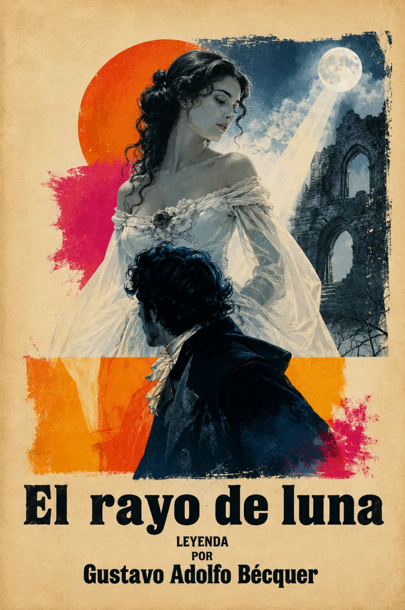

Leyenda · Romanticismo
El rayo
de luna.
La belleza de lo imposible.
Una silueta entre las ruinas. Una noche de búsqueda. Una leyenda sobre el deseo de encontrar lo que solo existe en la imaginación.

Perseguir
una ilusión.
Manrique, un joven soñador de Soria, cree distinguir una figura de mujer entre las ruinas, bajo la luz de la luna. La visión despierta una búsqueda en la que cada sombra parece prometer un encuentro.
Bécquer transforma el paisaje nocturno en un espejo del deseo. La distancia entre lo imaginado y lo real sostiene esta leyenda: una historia íntima sobre los ideales que inventamos y la soledad que dejan tras de sí.
Un paisaje real.
Un amor imaginado.
BIBLIOTECA SONORA
La obra,
en voz alta.
Grabación próximamente
VOLUMEN
La grabación estará disponible aquí.
Mientras tanto, descubre la ruta de la obra.
Ruta de escucha
05 PARTESUn recorrido temático por la obra.